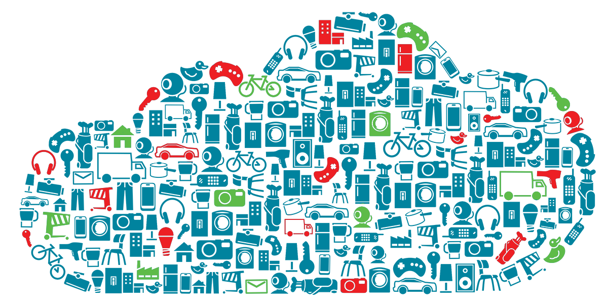

ATIVIDADE 3
ATIVIDADE 3
Internet das coisas (IOT), criada nos anos 2000 por Kevin Ashton, é conhecida por interligar os aparelhos do cotidiano.
O conceito é simples, e visa por implementar etiquetas eletrônicas RFID na cadeia de produção. Em seu início foi introduzida a utilização de sensores e atuadores, apesar de suas limitações de energia e memória.
Com o avanço da microeletrônica foram desenvolvidas interfaces menores e com custos reduzidos, viabilizando a introdução da telecomunição nesses objetos. Desta forma surgiu a internet das coisas, e a internet globalizada passou a incorporar os objetos do dia a dia.
Utilização
A comunicação entre os elementos se dá pela conexão dos sensores com a internet. Os sensores podem utilizar de várias tecnologias para realizar esta troca de informação, sejam elas de área local como RFID, NFC, Wi-Fi e Bluetooth ou de longa distancia como GSM, GPRS, 5G, 3G e LTE. Através do uso dessas tecnologias a internet das coisas está:
-
Conectando objetos inanimados e seres vivos: Primeiramente os testes e implantações foram realizados em objetos industriais a objetos de uso diário. Porém se expandiu e ponto de monitorar seres vivos, como plantas, animais de produção e pessoa. Por exemplo, o Projeto de monitoramento de Vacas em Essex que utiliza dados coletados em etiquetas de posicionamento de rádio para monitorar vacas em relação a doenças e acompanhar o comportamento do rebanho.
-
Usando sensores para coleta de dados: Os objetos físicos a serem conectados terão um ou vários sensores. Cada sensor monitorará uma condição específica como local, vibração, movimentação e temperatura. Na IOT, esses sensores conectam-se entre si com sistema de análise de dados. Assim, podendo apresentar conclusões sobre os dados recebidos.
Com os dados gerados através da comunicação entre os dispositivos e a interpretação dos mesmos as empresas foram capazes de automatizar muitas tarefas sem depender de serviços centrais ou baseados em nuvem.
Conclusão
A IOT é uma nova crescente tecnológica que veio complementar a INTERNET tradicional, oferecendo acesso de baixa velocidade/banda para elementos simples de nosso dia a dia. Foi implementada utilizando as melhores tecnologias já existentes no mercado. Permitiu a criação de diversas automações de diversos setores da economia. Viabilizou a análise de dados gerados por dispositivos cotidianos. A IOT está realizando uma transformação digital gerando uma grande quantidade de oportunidades, que, com certeza demandará muitos estudos nas resdes mundiais e em suas aplicações.
Referências
J.R. Emiliano Leite, Paulo S. Martins e Edson L. Ursini. A INTERNET das COISAS (IoT) : Tecnologias e Aplicações. Disponível em: https://lcv.fee.unicamp.br/images/BTSym-17/Papers/76926.pdf. Acesso em: 24 fev. 2020.